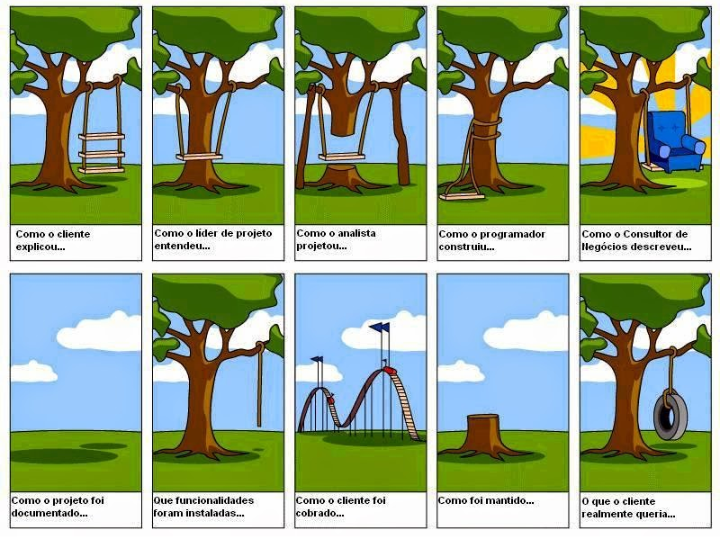
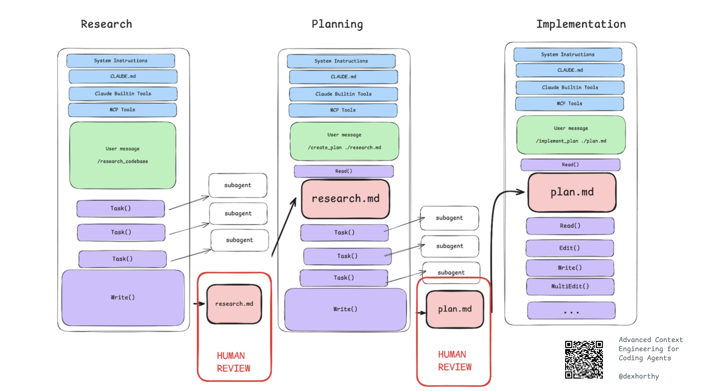

Spec-driven development
Sumário
Ao final da aula, o aluno deve ser capaz de tratar a especificação como artefato de primeira classe (ou próximo disso) no desenvolvimento com agentes, além de reconhecer como fluxos de trabalho como RPI e RePPIT a incorporam em etapas com artefatos revisáveis.
Preâmbulo
Sobre as notas de aula. Conteúdo escrito por mim em sua totalidade. Tabelas e figura foram geradas com auxílio do Claude. Estou deixando isso claro para que você tenha ciência de que, se houver erro aqui ou achar o material ruim, a culpa é minha mesmo. As notas de aula são um guia para a discussão em sala de aula e servem muito pouco como conteúdo para estudo.
Contexto
Especificar sempre foi uma das atividades mais complexas durante o ciclo de desenvolvimento de software. Essa figura tem sido usada há décadas para ilustrar o problema: comunicação falha.

Definir o que vai ser feito antes do como será feito é fundamental. Mas é uma tarefa muito difícil porque há ambiguidade, sobreposição semântica de termos, diferentes visões sobre a mesma coisa etc.
Agora o consumidor da especificação mudou. Antes, quem a lia era uma pessoa, que podia perguntar, discordar e preencher lacunas. Hoje pode ser um agente, que vai produzir código a partir do que está escrito, com muita velocidade.
Do que estamos tratando aqui? O que é especificação?
O que é spec
Como muita coisa na nossa área, há diferentes definições e que não são necessariamente conflitantes, mas muitas vezes complementares.
Processo vs. artefato
Assim como design/projeto, podemos ver especificação sob duas formas: processo e artefato. Segundo Sommerville, especificação de software é o processo de compreender e definir quais serviços são necessários ao sistema e de identificar as restrições à sua operação e ao seu desenvolvimento.
O processo busca produzir um documento de requisitos que descreva o sistema e que possa ser acordado entre clientes e desenvolvedores. Isso pode envolver estudo de viabilidade, elicitação e análise de requisitos, especificação de requisitos e validação de requisitos.
Os requisitos costumam ser apresentados em dois níveis de detalhe: os requisitos de usuário, em linguagem natural e diagramas voltados a clientes e usuários finais, e os requisitos de sistema, descrições mais detalhadas e precisas voltadas a quem vai desenvolver o sistema. Esses documentos também são chamados de especificação. Essa é a visão de especificação como artefato, não como processo.
Na minha visão, sobretudo no contexto desta disciplina, o processo é o que estamos chamando de maneira mais genérica de Entendimento. Note que essa visão é mais ampla e muito do que estamos fazendo nesta fase apoia ou está diretamente relacionado à escrita de especificações. Por exemplo, o /grill-me nos ajuda a alinhar objetivos, glossário, projeto etc, o que é fundamental para a escrita de boas especificações.
Spec como artefato prévio
Aqui, quando falo “spec”, falo do artefato que antecede o código e que o agente consome. Ele descreve o que o código deve fazer, não como. Há várias formas e formatos. Sommerville é o ponto de partida clássico, não o formato esperado.
Exemplo clássico
Um formato mais “clássico”, baseado no que o Sommerville sugere:
O sistema deve permitir que professores reservem laboratórios para aulas e atividades de pesquisa.
O sistema deve avisar o professor quando uma reserva sua for cancelada ou alterada pela coordenação.
Requisitos de sistema:
1.1 O sistema deve exibir, a partir de uma data e de um horário informados pelo professor, os laboratórios livres naquele intervalo.
1.2 Ao confirmar uma reserva, o sistema deve registrar o professor, o laboratório, a data, os horários de início e de término e a finalidade.
1.3 O sistema deve impedir reservas sobrepostas no mesmo laboratório e informar o conflito ao usuário.
1.4 O sistema deveria sugerir laboratórios alternativos quando o escolhido estiver ocupado.
2.1 Quando a coordenação cancelar ou alterar uma reserva, o sistema deve enviar um e-mail ao professor responsável em até 5 minutos.
2.2 A notificação deve informar a reserva original, a alteração feita e a justificativa registrada pela coordenação.
Requisito não funcional:
3.1 Um professor sem treinamento prévio deve concluir uma reserva em até 2 minutos, e pelo menos 90% de um grupo de teste com dez professores deve conseguir isso na primeira tentativa.
Exemplo “moderno”
A mesma funcionalidade como uma spec curta de workflow moderno:
Comportamento esperado:
Dado que o LabA está reservado das 14h às 16h na segunda,
quando um professor tenta reservar o LabA das 15h às 17h na segunda,
então o sistema recusa a reserva e informa quem já reservou e em qual horário.
Dado que o LabA está reservado das 14h às 16h na segunda,
quando um professor reserva o LabA das 16h às 18h na segunda,
então a reserva é aceita (horário de término não conflita com o início).
Fora de escopo: notificações por e-mail, sugestão de laboratórios alternativos.
Critérios de aceite:
- Dois pedidos simultâneos para o mesmo horário resultam em exatamente uma reserva.
- Cada exemplo acima tem um teste automatizado.
- é mais curta;
- mais exemplos; e
- mais próxima de algo verificável (teste).
Perguntas importantes
Vamos discutir algumas questões importantes sobre esse tipo de documento.
- Na prática, fazemos sempre? Completo? Para todo o sistema? A resposta é sempre depende, mas…
- Uma discussão importante é “em que momento” e “como manter atualizado”.
- A dicotomia processos “pesados” vs. processos leves/ágeis.
Uma ideia antiga
Especificar antes de implementar não é novo. A mesma ideia reaparece, há décadas, em formas diferentes:
- 1969, Hoare (pré e pós-condições), e 1986, Design by Contract (Meyer): spec como contrato verificável. Dizemos o que a operação exige e o que ela garante.
- 2001, Model-Driven Architecture (OMG): spec como modelo, do qual se gera código.
- 2003, Test-driven development (Beck): spec como teste executável.
Todas tentaram o mesmo: dizer o quê antes do como. E o que limitava era quem escrevia, como escrevia e mantinha.
Se especificar antes de implementar sempre foi vantajoso e mesmo assim raramente foi feito, o que mudou?
Vamos por partes.
- Sempre foi vantajoso?
- Por que raramente foi feito?
O que mudou?
- O consumidor. Quem lê a spec agora é um agente.
- O custo humano de produzir código diminuiu. O gargalo passa a ser decidir o que fazer, e não digitar.
O que não mudou?
- Spec ruim gera código ruim.
- Código evolui muito mais rapidamente que a spec.
- A mesma spec pode gerar código diferente, então a spec sozinha não garante nada e os testes/sensores continuam necessários.
Waterfall de novo?
Não. A ideia é que o ciclo seja de minutos ou horas e a spec seja pequena e revisada.
É tudo sobre os bons princípios e como você aplica no fluxo de trabalho.
Workflows
Fluxos de trabalho incorporam SDD. É assim que tem sido feito na prática.
Há vários. Minha curadoria chegou nestes quatro. Note que são todos desenvolvidos em cima dos mesmos bons princípios de ES que sempre existiram (e sempre existirão):
- Entender antes de decidir.
- Decisão humana em pontos de revisão.
- Trabalho em fatias pequenas e verificáveis.
- Feedback por teste/validação/sensores/guardrails.
- Contexto curto e limpo.
Research Plan Implement (RPI). Advanced context engineering. Plugin: https://github.com/bostonaholic/team

RePPIT. Research the codebase, Propose solutions, Plan the chosen one, Implement it, Test it. (artigo, repositório)
Specify, Plan, Implement and Validate (Kiro). (demonstração de Débora em sala de aula).
Eu tenho usado o fluxo principal do Matt Pocock link: /grill, /to-spec, /to-tickets, /implement (implement-spec), /code-review, /pr, /retro. Gostei deste link vídeo explicativo.
Também tenho analisado com bons olhos o pstack da Lauren Tan (https://x.com/poteto).
Ferramentas
Spec Kit (GitHub, 2025). Kit de código aberto (MIT) que funciona com vários agentes por meio de comandos como /speckit.specify e /speckit.plan. Organiza o trabalho em fases sequenciais com pontos de revisão humana e uma “constituição” de princípios do projeto. Uma spec pequena por funcionalidade.
OpenSpec (Fission AI). Framework de código aberto (MIT). Em vez de exigir uma spec completa de início, trabalha com propostas de mudança sobre um diretório de specs versionadas, e as etapas (criar, implementar, atualizar, arquivar) podem ser feitas a qualquer momento.
Kiro (AWS). IDE própria, baseada no VS Code, de código fechado. Conduz cada funcionalidade por requisitos, projeto e tarefas, guardados como arquivos na pasta .kiro/specs/ do repositório. Permite alternar entre o modo spec e o modo livre (“vibe”).
Entenda o fluxo antes de adotar a ferramenta. As ferramentas mudam mais rápido que os princípios. Hoje eu uso o fluxo do Matt Pocock.
Relatos da aula
Insights
Não é human in the loop. É human in control.
- Não terceirize decisões. Controle as decisões e documente.
- Matenha simples e pequeno.
- Controle o processo.
- Invista tempo em validação: guardrails e sensores são primordiais.
Participação dos alunos
- Como lidar com o viés de que o modelo vai fazer testes parafusados para o código dele?
Aqui discutimos algumas estratégias, como testes antes da implementação, uso de modelos diferentes para gerar testes ou julgar o que o modelo principal fez. Isso diminui o viés de um único modelo.
- Como avaliar a qualidade dos testes?
Ferramentas específicas para isso e usá-las como sensores.
Novamente a importância de sensores. Nós, como engenheiros, temos que definir as retrições de qualidade, arquitetura, funcionalidade e colocarmos como métodos determinísticos dentro do processo.